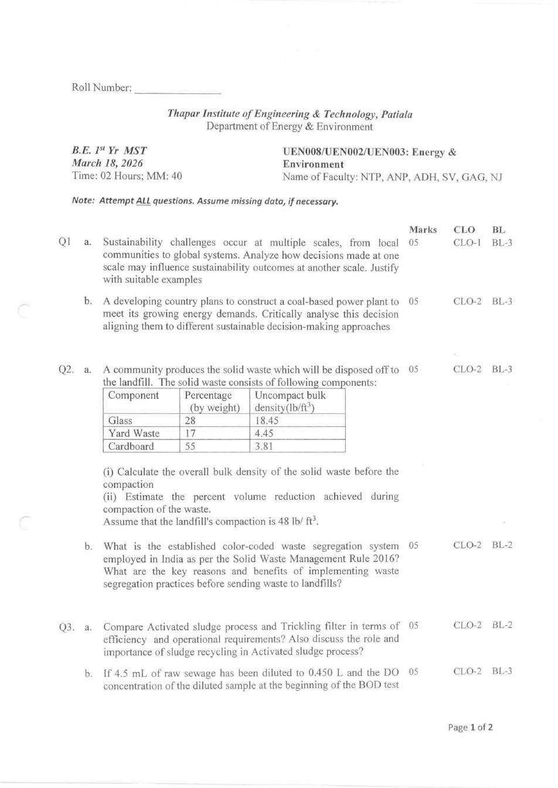
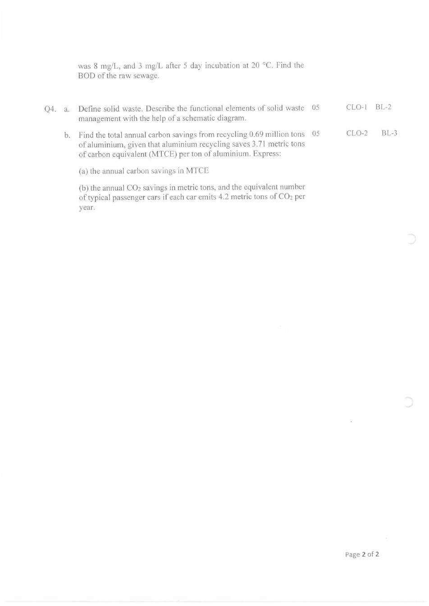
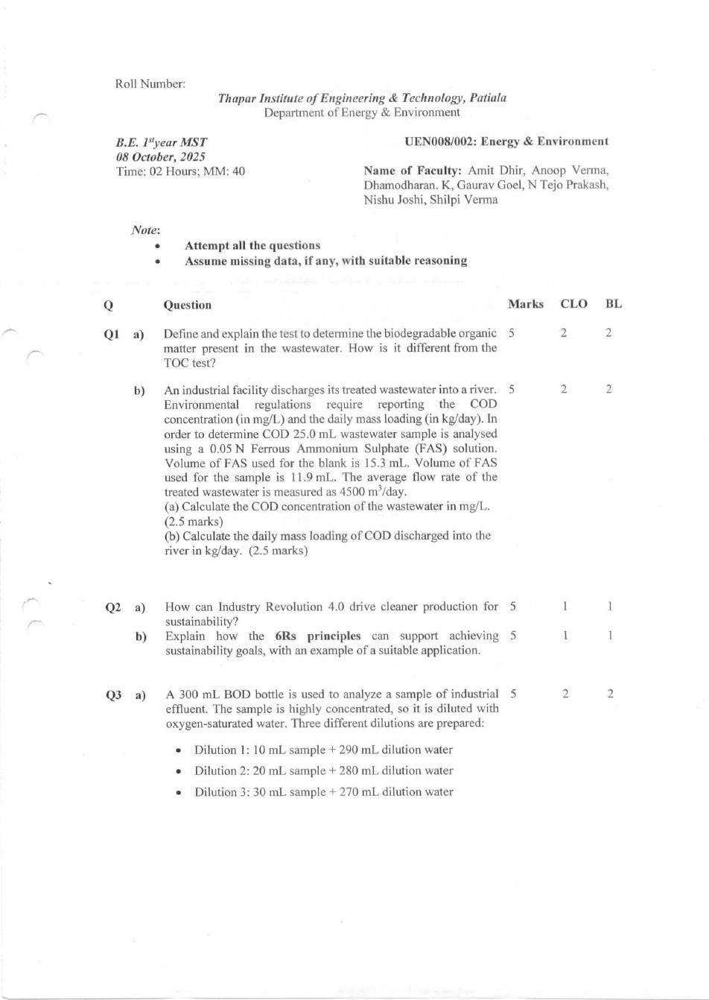
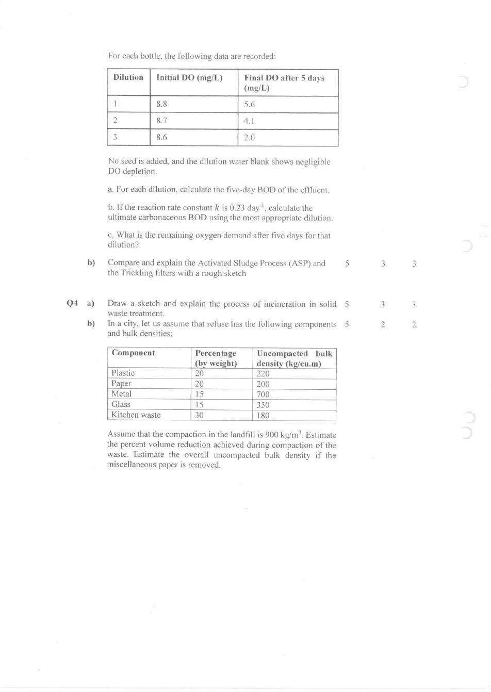
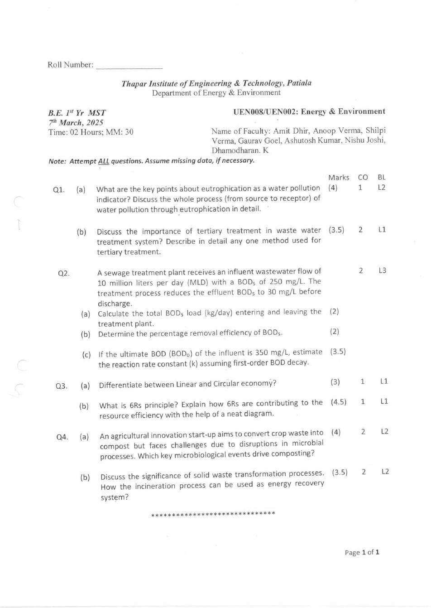
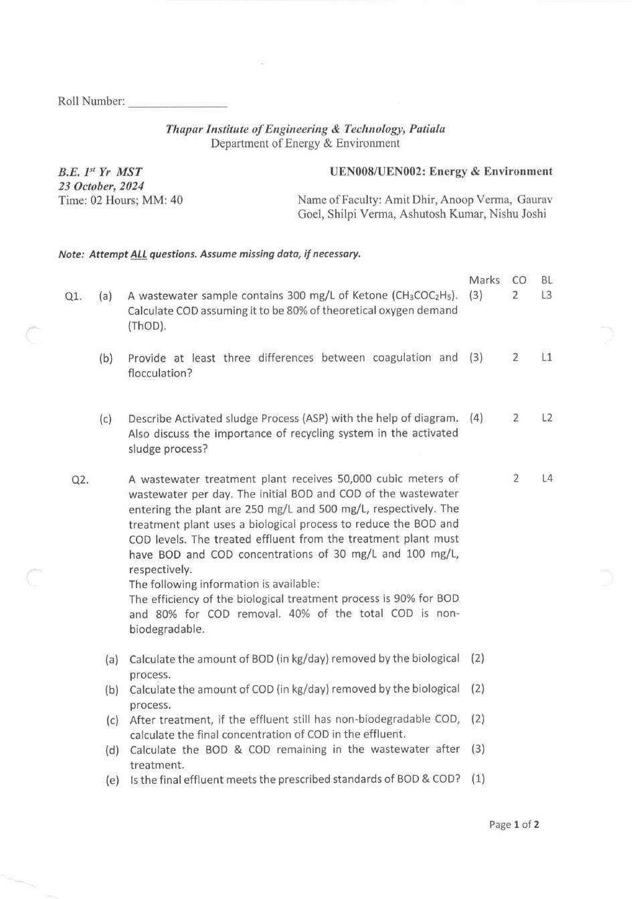
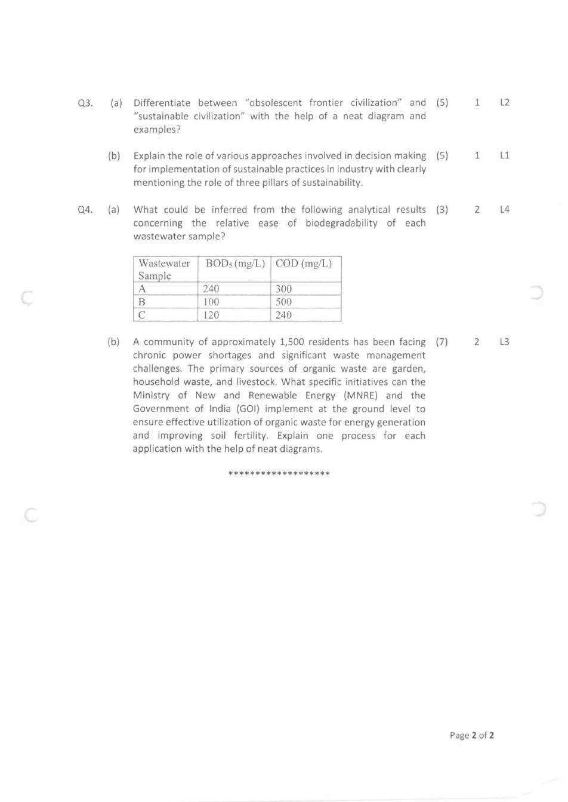

UEN008 / UEN002 — Energy & Environment MST Question Paper Analysis
Built from five actual MST papers — March 2024, October 2024, March 2025, October 2025, and March 2026. Every number below is added up from the marks printed on those papers.
Before you rely on this: this analysis reflects the syllabus as it stood across these five papers. If your current semester's syllabus has added or dropped a topic, the weightage below will shift accordingly — always cross-check against this year's official syllabus first. Air pollution, for example, appeared only in March 2024.
Sustainability and solid waste management appeared in every one of the last five MSTs. Wastewater — BOD, COD and treatment — is the biggest block overall, at 36% of all marks.
1
Must-do topics — highest chance of coming
Every topic worth preparing, ranked by how reliably it has come up across the five papers. "Chance" here comes only from how often each topic appeared in past MSTs — it is not a guarantee about this year's paper.
Very high asked in every paperHigh asked in most papers
Sustainability, circular economy & 6Rs
Very high
Asked in 5 of 5 papers9 questions44.5 marks in totalLast asked: Mar 2026
Mar 2024Oct 2024Mar 2025Oct 2025Mar 2026
Prepare: Linear vs. circular economy, the 6Rs with a diagram, the three pillars, and sustainable decision-making approaches with a real example.
Solid waste management & treatment
Very high
Asked in 5 of 5 papers7 questions34.5 marks in totalLast asked: Mar 2026
Mar 2024Oct 2024Mar 2025Oct 2025Mar 2026
Prepare: Segregation at source (three streams under the SWM Rules 2016), functional elements with a schematic, composting, and incineration with a sketch.
BOD / COD tests & numericals
High
Asked in 4 of 5 papers8 questions43.5 marks in totalLast asked: Mar 2026
Mar 2024Oct 2024Mar 2025Oct 2025Mar 2026
Prepare: BOD loads in kg/day, removal efficiency, dilution BOD, rate constant k and remaining BOD, COD by FAS titration, and ThOD.
In every paper since Oct 2024.
Wastewater treatment
High
Asked in 4 of 5 papers6 questions24.5 marks in totalLast asked: Mar 2026
Mar 2024Oct 2024Mar 2025Oct 2025Mar 2026
Prepare: Activated sludge vs. trickling filter with sketches and sludge recycling, coagulation vs. flocculation, tertiary treatment, and eutrophication.
Solid waste numericals
High
Asked in 3 of 5 papers4 questions20 marks in totalLast asked: Mar 2026
Mar 2024Oct 2024Mar 2025Oct 2025Mar 2026
Prepare: Mixture bulk density and % volume reduction on compaction, and waste quantity / bins.
The bulk-density question appeared in both of the last two papers.
2
Year-wise paper analysis
Each paper on its own — what it covered, how it was built, and what was different about it. Newest first.
Paper
Max
Sustainability
Wastewater
Solid waste
Air pollution
Mar 2026
40
10
10
20
—
Oct 2025
40
10
20
10
—
Mar 2025
30
7.5
15
7.5
—
Oct 2024
40
10
23
7
—
Mar 2024
40
7
—
10
23
March 2026 — most recent
Mar 18, 202640 marks8 parts × 5 marks2 hours
Topic split (marks)
Sustainability 10Wastewater 10Solid waste 20
Question type (marks)
Numerical / data 15Theory 25
What stood out
Solid waste took half the paper (20 marks): a bulk-density and compaction numerical, segregation under the SWM Rules 2016, the functional elements of solid waste management with a schematic, and a new type of numerical — carbon savings from recycling aluminium.
Wastewater was lighter: activated sludge vs. trickling filter with sludge recycling, and a single-dilution BOD numerical.
Sustainability came as analysis questions: how decisions at one scale affect another, and a coal power plant judged against decision-making approaches.
Every part was worth exactly 5 marks.
October 2025
Oct 8, 202540 marks8 parts × 5 marks2 hours
Topic split (marks)
Sustainability 10Wastewater 20Solid waste 10
Question type (marks)
Numerical / data 15Theory 25
What stood out
The most BOD/COD-heavy paper: the BOD test and how it differs from TOC, a COD titration with ferrous ammonium sulphate, and a three-dilution BOD table followed by ultimate BOD and remaining demand.
Activated sludge vs. trickling filter with a rough sketch.
Sustainability: Industry 4.0 for cleaner production, and the 6Rs with an application.
Solid waste: incineration with a sketch, and a five-component bulk-density table with landfill compaction.
March 2025
Mar 7, 202530 marks9 parts2 hours
Topic split (marks)
Sustainability 7.5Wastewater 15Solid waste 7.5
Question type (marks)
Numerical / data 7.5Theory 22.5
What stood out
The only 30-mark paper, and the most theory-heavy — just one numerical (7.5 marks).
That numerical covered BOD loads in kg/day, removal efficiency, and the first-order rate constant k from ultimate BOD.
Water pollution theory: eutrophication from source to receptor, and tertiary treatment.
Linear vs. circular economy and the 6Rs with a diagram; composting microbiology; solid waste transformation and incineration for energy recovery.
October 2024
Oct 23, 202440 marks4 questions2 hours
Topic split (marks)
Sustainability 10Wastewater 23Solid waste 7
Question type (marks)
Numerical / data 16Theory 24
What stood out
Wastewater dominated with 23 marks, including a 10-mark, five-part treatment-plant problem on BOD/COD removal and discharge standards.
ThOD of a ketone (CH₃COC₂H₅) with COD as 80% of ThOD; coagulation vs. flocculation; the activated sludge process with a diagram and sludge recycling.
A data question: judging biodegradability of three samples from their BOD₅ and COD.
A 7-mark community case on turning organic waste into energy and compost, with diagrams.
Sustainability: obsolescent frontier vs. sustainable civilization, and decision-making approaches with the three pillars.
March 2024
Mar 17, 202440 marks4 questions2 hours
Topic split (marks)
Sustainability 7Solid waste 10Air pollution 23
Question type (marks)
Numerical / data 15Theory 25
What stood out
The only paper with air pollution — 23 marks on particulate matter, atmospheric stability (ELR vs. PLR), combustion of butane, gravity settling chambers, and an SO₂ wet-scrubber numerical.
No wastewater questions at all.
A 7-mark circular economy question — the largest single sustainability part across all five papers.
Solid waste: segregation at source with resource recovery, and a bins-and-compactor numerical for a family of eight.
What changes across the five papers
Air pollution vanished after March 2024 — zero marks in the last four papers. Confirm whether it's in your MST portion.
Wastewater led from Oct 2024 to Oct 2025 (15–23 marks), then solid waste took over in March 2026 (20 marks).
Sustainability is steady at 7–10 marks in every paper.
Numericals stay at about 15 marks per 40-mark paper — the rest is theory, often with a diagram.
The two most recent papers (Oct 2025, Mar 2026) used eight equal 5-mark parts, instead of the uneven splits before.
3
Repeated-topics heatmap
Every topic across all five papers at a glance. March 2025 was out of 30, the rest out of 40, so shading shows each topic's share of that paper.
Topic
Mar 2024 /40
Oct 2024 /40
Mar 2025 /30
Oct 2025 /40
Mar 2026 /40
Asked in
Sustainability & decision-making
—
10
—
5
10
3/5
Circular economy & 6Rs
7
—
7.5
5
—
3/5
BOD / COD / ThOD tests & numericals
—
16
7.5
15
5
4/5
Wastewater treatment & water pollution
—
7
7.5
5
5
4/5
Solid waste numericals
5
—
—
5
10
3/5
Solid waste management & treatment
5
7
7.5
5
10
5/5
Air pollution & control
23
—
—
—
—
1/5
Darker = bigger share of that paper's marks · number = marks
· not asked
4
Topic deep-dive — every repeated question, by year
Every topic, with the actual question asked in each paper it appeared in.
BOD — loads, dilution & rate constant
4 / 5 papers
MAR 2026
4.5 mL of raw sewage is diluted to 0.450 L. DO is 8 mg/L at the start and 3 mg/L after 5 days at 20 °C. Find the BOD of the raw sewage.
OCT 2025
Define the test for biodegradable organic matter in wastewater and how it differs from TOC. Then: a 300 mL BOD bottle with three dilutions (10, 20, 30 mL sample) — find BOD₅ for each, the ultimate BOD with k = 0.23 day⁻¹ using the most appropriate dilution, and the oxygen demand remaining after 5 days.
MAR 2025
A plant receives 10 MLD with BOD₅ 250 mg/L, discharging at 30 mg/L. Find the BOD₅ load in and out (kg/day), the removal efficiency, and — with ultimate BOD 350 mg/L — the first-order rate constant k.
OCT 2024
A plant receives 50,000 m³/day at BOD 250 and COD 500 mg/L, with 90% BOD and 80% COD removal and 40% non-biodegradable COD. Find BOD and COD removed (kg/day), final COD, remaining BOD and COD, and whether the effluent meets 30/100 mg/L standards.
COD, ThOD & biodegradability
2 / 5 papers
OCT 2025
A 25.0 mL sample is titrated with 0.05 N FAS: 15.3 mL for the blank, 11.9 mL for the sample. Find COD (mg/L) and the daily COD load at 4500 m³/day.
OCT 2024
Wastewater contains 300 mg/L of CH₃COC₂H₅. Find COD, taking it as 80% of ThOD. Separately: judge the biodegradability of three samples from their BOD₅ and COD (A: 240/300, B: 100/500, C: 120/240).
Activated sludge & wastewater treatment
4 / 5 papers
MAR 2026
Compare the activated sludge process and trickling filter in efficiency and operation. Discuss the role of sludge recycling in ASP.
OCT 2025
Compare and explain ASP and trickling filters with a rough sketch.
MAR 2025
Discuss eutrophication as a water pollution indicator, from source to receptor. Discuss tertiary treatment and describe one method.
OCT 2024
Give three differences between coagulation and flocculation. Describe ASP with a diagram and the importance of recycling.
Solid waste — bulk density & quantities
3 / 5 papers
MAR 2026
Glass 28%, yard waste 17%, cardboard 55% with given densities (lb/ft³): find the overall uncompacted bulk density and the % volume reduction at 48 lb/ft³ landfill compaction. Separately: carbon and CO₂ savings from recycling 0.69 million tons of aluminium (3.71 MTCE per ton), and the equivalent number of cars at 4.2 t CO₂ each.
OCT 2025
Five components (plastic, paper, metal, glass, kitchen waste) with weight % and densities: find the % volume reduction at 900 kg/m³, and the overall bulk density if paper is removed.
MAR 2024
Eight people at 1.5 kg/person/day, bulk density 265 kg/m³, collected every 6 days — how many 50 L bins? With a compactor to 1200 kg/m³, how many 15 kg blocks and bins?
Solid waste management & treatment
5 / 5 papers
MAR 2026
The colour-coded segregation system under the SWM Rules 2016, and the benefits of segregation before landfill. Define solid waste and describe its functional elements with a schematic.
OCT 2025
Draw a sketch and explain incineration in solid waste treatment.
MAR 2025
The key microbiological events that drive composting. The significance of waste transformation processes, and incineration as energy recovery.
OCT 2024
A community of 1,500 with power shortages and organic waste: what can MNRE and the Government of India do on the ground? Explain one process each for energy generation and soil fertility, with diagrams.
MAR 2024
How segregation at source helps a city manage solid waste, and the avenues for resource recovery from dry waste.
Sustainability, circular economy & 6Rs
5 / 5 papers
MAR 2026
Analyse how sustainability decisions at one scale affect outcomes at another, with examples. Critically analyse a coal-based power plant decision against sustainable decision-making approaches.
OCT 2025
How Industry 4.0 can drive cleaner production. How the 6Rs support sustainability goals, with an application.
MAR 2025
Differentiate linear and circular economy. Explain the 6Rs and how they contribute to resource efficiency, with a diagram.
OCT 2024
Differentiate obsolescent frontier and sustainable civilization with a diagram and examples. Explain decision-making approaches for sustainable practices in industry, with the three pillars.
MAR 2024
The importance of circular economy for sustainable development, strategies across industries, and the role of technology (7 marks).
Air pollution & control
1 / 5 papers
MAR 2024
Categories of particulate matter and why PM is a criteria pollutant. Atmospheric stability based on ELR and PLR. Oxygen needed to burn 5.8 g of butane, with moles of CO₂ and H₂O. Gravity settling chamber — principle, pros and cons, and why the Howard chamber is better. SO₂ scrubber: 5000 m³/h at 150 ppm, 90% efficiency — SO₂ removed (kg/h) and outlet ppm.
5
Formula sheet
Only what these five papers actually needed.
BOD & COD
Load (kg/day) = C (mg/L) × Q (m³/day) × 10⁻³
mg/L equals g/m³. 1 MLD = 1000 m³/day, so with Q in MLD, load = C × Q directly (250 mg/L × 10 MLD = 2500 kg/day).
Removal efficiency (%) = (Cin − Cout) / Cin × 100
BOD₅ = (DOi − DOf) / P, P = sample volume / total volume
For an unseeded sample. 10 mL in a 300 mL bottle gives P = 10/300; 4.5 mL made up to 450 mL gives P = 0.01.
ELR = environmental lapse rate (how the surrounding air actually cools with height). PLR = the rate a rising air parcel cools, which for dry air is the dry adiabatic lapse rate, about 9.8 °C/km.
Stokes' law: vt = g d² (ρp − ρg) / (18μ)
Settling velocity of a particle in a gravity settling chamber.
6
Common mistakes that lose marks
Specific traps these five papers set — each one costs easy marks.
✕
Losing the 10⁻³ in load calculationsmg/L × m³/day gives g/day; divide by 1000 for kg/day. And 1 MLD = 1000 m³/day. Oct 2024, Mar 2025, Oct 2025
✕
Wrong dilution fraction PP = sample ÷ total bottle volume (10/300), not sample ÷ dilution water (10/290). Oct 2025, Mar 2026
✕
Mixing base-e and base-10 ke−kt needs a base-e k; with a base-10 K use 10−Kt. Check which one the question gives. Mar 2025, Oct 2025
✕
Confusing BOD exerted with BOD remainingAfter t days, the demand left is L₀e−kt, which equals L₀ − BODt — not BODt itself. Oct 2025
✕
Subtracting the wrong way in COD titrationCOD uses (blank − sample) FAS volume. The blank always uses more FAS. Oct 2025
✕
ThOD from the wrong formulaWrite the molecular formula first (CH₃COC₂H₅ = C₄H₈O) and balance the oxidation before multiplying by 32. Oct 2024
✕
Averaging bulk densities by weight %Convert each component to a volume (mass ÷ density), add the volumes, then divide total mass by total volume. Oct 2025, Mar 2026
✕
Rounding bins downYou can't use part of a bin — always round the number of bins up. Mar 2024
✕
Reading biodegradability from COD aloneUse the BOD₅/COD ratio: a higher ratio means more biodegradable. Oct 2024
✕
Swapping coagulation and flocculationCoagulation: chemicals neutralise particle charges during rapid mixing. Flocculation: gentle slow mixing lets the particles grow into flocs. Oct 2024
✕
Leaving out sludge recycling in ASPReturning activated sludge keeps the microbe population high in the aeration tank — it has been asked about specifically twice. Oct 2024, Mar 2026
✕
Two streams instead of three for segregationThe SWM Rules 2016 require segregation into three streams: biodegradable, non-biodegradable, and domestic hazardous waste. Mar 2026
✕
Theory answers without the diagram or examplesMany questions say "with a neat diagram," "with a sketch," or "with examples" — that's part of the question, not optional. Four of five papers
7
If you only have one evening
BOD numericals — loads in kg/day, removal efficiency, dilution BOD, rate constant k, and remaining BOD.
COD by FAS titration and ThOD from a balanced equation.
Activated sludge vs. trickling filter — a labelled sketch of each, plus why sludge is recycled.
Solid waste — the bulk-density / volume-reduction numerical, segregation into three streams, functional elements with a schematic, incineration and composting.
Sustainability — linear vs. circular economy, the 6Rs, and decision-making approaches with a real example.
If air pollution is in your MST portion: atmospheric stability, particulate matter, and the gravity settling chamber.
Did this guide help you?
This guide is made by a student, for students — free, no ads, and built by reading every past paper by hand. If it genuinely helps you, please take five seconds to vote and leave a line about what worked or what's missing. Your answer goes only to the student who made it, and it decides which subjects and guides get built next.
Thanks — this genuinely helps. Good luck in the exam.
8
Full question papers
All five papers as original scans, including every data table. Newest first. Try one as a timed 2-hour mock before looking at the analysis.
MST — March 18, 2026
UEN008/UEN002/UEN003: Energy & Environment · 40 marks · 2 hours


MST — October 8, 2025
UEN008/002: Energy & Environment · 40 marks · 2 hours


MST — March 7, 2025
UEN008/UEN002: Energy & Environment · 30 marks · 2 hours

MST — October 23, 2024
UEN008/UEN002: Energy & Environment · 40 marks · 2 hours


MST — March 17, 2024
UEN008/UEN002: Energy & Environment · 40 marks · 2 hours